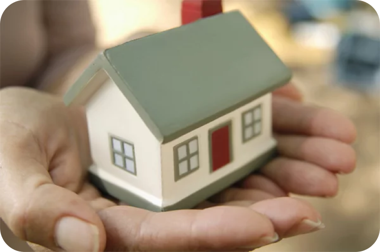

01
DÉFICIT HABITACIONAL
Quando a moradia não cabe no orçamento
O alto preço da terra nas áreas centrais e a retenção de imóveis vazios dificultam o acesso a uma casa adequada. O problema não é só a quantidade de moradias, mas onde elas estão e a quem atendem.